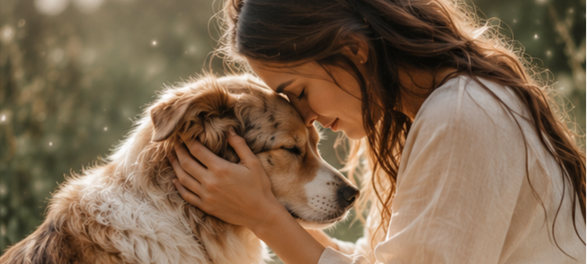

Comportement
Changements & Inquiétudes
Comprendre l'origine d'un comportement inhabituel, d'une peur soudaine, d'une anxiété de séparation ou d'une agressivité inexpliquée.
Écouter les émotions et les messages de votre compagnon pour renforcer votre lien.
La communication animale intuitive permet d'établir un espace de connexion d'âme à d'âme avec votre compagnon. Elle offre un éclairage précieux sur ses ressentis, ses besoins profonds, ses inconforts ou son histoire.
Elle s'adresse aux animaux du quotidien (chiens, chats, chevaux, NAC) comme aux animaux disparus ou défunts, dans une approche empreinte de douceur, de respect et de bienveillance.
L'objectif est d'agir comme un pont de compréhension entre vous et votre animal pour restaurer l'harmonie, mieux vivre les transitions et approfondir votre complicité.
Note importante : La communication animale repose sur la réception de perceptions intuitives. Elle ne remplace en aucun cas l'avis d'un vétérinaire ni l'accompagnement d'un comportementaliste animalier.

Des réponses concrètes pour accompagner votre compagnon à chaque étape.
Comprendre l'origine d'un comportement inhabituel, d'une peur soudaine, d'une anxiété de séparation ou d'une agressivité inexpliquée.
Préparer votre animal à un événement important : un déménagement, l'arrivée d'un bébé, un nouveau compagnon ou un départ en vacances.
Localiser des zones de gêne ou de fatigue pour adapter le quotidien d'un animal vieillissant ou en convalescence.
Maintenir la connexion avec un compagnon parti de l'autre côté, transmettre des messages et apaiser le chemin du deuil.
Vous transmettez une photo récente de l'animal seul (yeux bien visibles), son prénom, son âge et la liste de vos questions.
Marine réalise la communication à distance dans un temps de calme absolu, sans perturber le quotidien de l'animal.
Un rendez-vous en visio est fixé pour échanger oralement sur les messages perçus, suivi d'un compte rendu écrit complet.
Des formules claires pour répondre aux besoins de votre binôme.
110 €
⏱️ Durée : 2h30 à 3h d'accompagnement155 €
⏱️ Formule complète DuoOffrez-vous un moment d'écoute privilégié pour approfondir votre lien avec lui.
Prendre rendez-vous